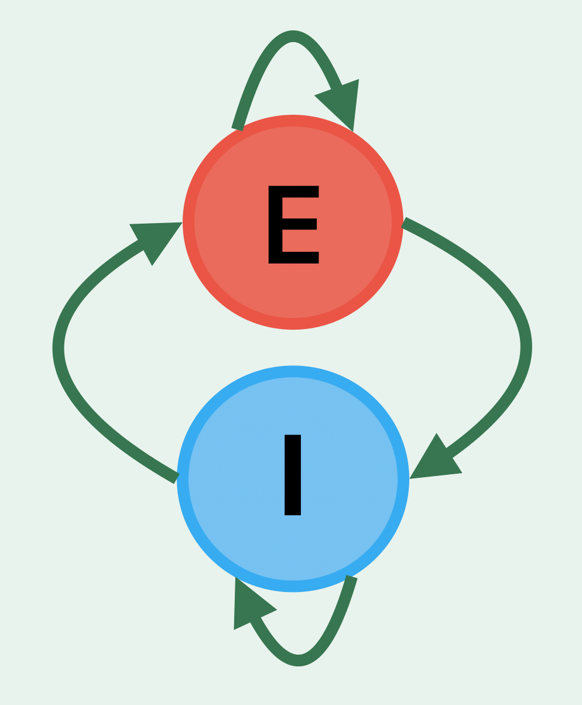

Behaviour Modelling of Learning
Computational modelling of the behaviour dynamics over learning
Animals extract statistical structure from the environment even when there is no explicit need to do so. This behaviour may help animals adapt and give them flexibility. I study how the brain learns such statistical structure from the environment and uses it to guide decisions. I combine neural imaging, optogenetic manipulations, and computational modelling.
Computational modelling of the behaviour dynamics over learning
Investigating how cortical circuits encode and update statistical representations

Examining how E-I coordination changes during learning to support transitions between behavioural states.
I develop models that capture how animals update their beliefs trial-by-trial during learning. These models reveal the continuous dynamics of how decision strategies evolve with experience.
Brains must learn the statistics of the sensory world to make good decisions under uncertainty. I investigate how cortical circuits encode and update statistical representations, and how their involvement changes as animals gain expertise.
The balance between excitation and inhibition shapes what computations neural circuits can perform. I examine how E-I coordination changes during learning and how these changes support transitions between flexible and stable behavioural states.